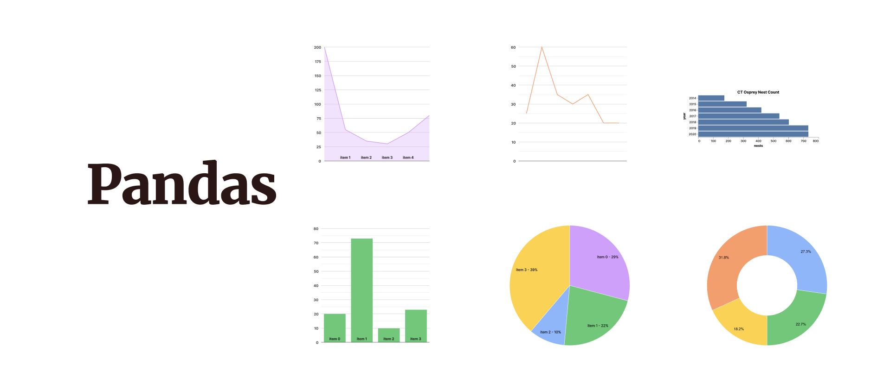

Chapter 7#
Data Formatting and Summarizing with Pandas#

More references: https://www.kaggle.com/code/kashnitsky/topic-1-exploratory-data-analysis-with-pandas
Learning Objectives:#
Pandas:
Pandas Series
Series
DataFrame
Create subests and convert as a dataframe
Accessing index
Handling data
Import dataset
Summarize data
Import popular Iris data
Extract basic information in a data
Selecting data
Data Conditioning
Plot data and create:
Density plot
Histogram
Scatter plot
Boxplot
1. Pandas#
Pandas is a Python package. It provides fast, flexible, and expressive data structures. It is designed to make working with “relational” or “labeled” data both easy and intuitive and aims to be the fundamental high-level building block for doing practical, real world data analysis in Python.
1.1. Pandas Series#
Basic Data types#
1.1.1 Series#
Can be understood as a 1 dimensional labelled / indexed array. You can access individual elements of this series through these labels.
Capable of holding any data type (integers, strings, floating point numbers, Python objects, etc.). The axis labels are collectively referred to as the index.
If data is an nd-array, index must be the same length as data. If you create a DataFrame from an nd-array and don’t provide an index, pandas will automatically create one for you. This index will consist of integers from 0 to N-1, where N is the number of rows in the Series.
Series act like an 1D array, but any operation that slices the series, also slices the index!
A Series is like a fixed-size dict in that you can get and set values by index label
When doing data analysis, as with raw NumPy arrays looping through Series value-by-value is usually not necessary. Series can be also be passed into most NumPy methods expecting an nd-array.
Syntax structure: s = pd.Series(data, index=index)
Example for creating a Series:
Import the pandas module first and create a Series for a list of numbers in range 10.
In this case, we did not specify an index, so pandas automatically assigned one with values ranging from 0 to N-1, where N is the length of the data.
import pandas as pd
data = list(range(10))
pd.Series(data)
0 0
1 1
2 2
3 3
4 4
5 5
6 6
7 7
8 8
9 9
dtype: int64
Now we specify a custom index when creating the Series.
data = list(range(5))
index=["row1", "row2", "row3", "row4", "row5"]
pd.Series(data, index)
row1 0
row2 1
row3 2
row4 3
row5 4
dtype: int64
We can use the index/label to access specific data values in the Series.
Using .loc[index].
data = list(range(5))
index=["row1", "row2", "row3", "row4", "row5"]
s = pd.Series(data, index)
Access a single row by label:
s.loc["row5"]# access the value in row5
4
Access multiple rows by labels:
s.loc[["row1", "row5"]]# access the value in row1 and row5
row1 0
row5 4
dtype: int64
Access rows with a boolean array:
s.loc[s>2]
row4 3
row5 4
dtype: int64
1.1.2. DataFrame#
2-dimensional labeled data structure with columns of potentially different types.
You can think of it like a spreadsheet, or a dict of Series objects.
It is generally the most commonly used pandas object.
Like Series, DataFrame accepts many different kinds of input:
Dict of 1D nd-arrays, lists, dicts, or Series
2-D numpy.ndarray
Structured or record nd-array
A Series
Another DataFrame
Along with the data you can optionally pass index (row labels) and columns (column labels) arguments. If you pass an index and / or columns, you are guaranteeing the index and / or columns of the resulting DataFrame.
The row and column labels can be accessed respectively by accessing the index and columns attributes.
DataFrame is not intended to work exactly like a 2-dimensional NumPy ndarray.
The example below show how to create a DataFrame and the way to use .loc[index] to access specific data by rows and columns.
data = {'Name': ['John', 'Anna', 'Peter', 'Linda'],
'Age': [28, 24, 35, 32],
'City': ['New York', 'Paris', 'Berlin', 'London']}
df = pd.DataFrame(data)
df
| Name | Age | City | |
|---|---|---|---|
| 0 | John | 28 | New York |
| 1 | Anna | 24 | Paris |
| 2 | Peter | 35 | Berlin |
| 3 | Linda | 32 | London |
Accessing a single row:
df.loc[1] # access the row with index=1
Name Anna
Age 24
City Paris
Name: 1, dtype: object
Accessing multiple rows:
df.loc[1:3] # access the rows from index=1 to index=3
| Name | Age | City | |
|---|---|---|---|
| 1 | Anna | 24 | Paris |
| 2 | Peter | 35 | Berlin |
| 3 | Linda | 32 | London |
Accessing rows and columns:
df.loc[[1,2], 'Name'] # access the 'Name' for people from index = 1 and 2
1 Anna
2 Peter
Name: Name, dtype: object
Accessing a slice of rows and specific columns:
df.loc[1:3, ['Name', 'City']] # access the 'Name' and 'City' for the people in rows with indices 1 to 3
| Name | City | |
|---|---|---|
| 1 | Anna | Paris |
| 2 | Peter | Berlin |
| 3 | Linda | London |
Accessing rows based on a condition:
df.loc[df['Age'] > 30] # get the rows that people are older than 30
| Name | Age | City | |
|---|---|---|---|
| 2 | Peter | 35 | Berlin |
| 3 | Linda | 32 | London |
1.1.3. Install Libraries#
#import gdal
import rasterio
import numpy
import numpy as np
import matplotlib
import matplotlib.pyplot as plt
from rasterio.plot import show
import os
---------------------------------------------------------------------------
ModuleNotFoundError Traceback (most recent call last)
/var/folders/qt/qy37fy6s3c1553y2k74063pr0000gn/T/ipykernel_7647/1136024241.py in <module>
1 #import gdal
----> 2 import rasterio
3 import numpy
4 import numpy as np
5 import matplotlib
ModuleNotFoundError: No module named 'rasterio'
1.1.4. Create a DataFrame#
# created a dataset
d = {'one': pd.Series([1., 2., 3.], index=['a', 'b', 'c']),
'two': pd.Series([1., 2., 3., 4.], index=['a', 'b', 'c', 'd'])}
print(d)
{'one': a 1.0
b 2.0
c 3.0
dtype: float64, 'two': a 1.0
b 2.0
c 3.0
d 4.0
dtype: float64}
# converted to a frame
df = pd.DataFrame(d)
df
| one | two | |
|---|---|---|
| a | 1.0 | 1.0 |
| b | 2.0 | 2.0 |
| c | 3.0 | 3.0 |
| d | NaN | 4.0 |
Since there’s no data in row d for the first column, the “NaN” here represents no data.
# accessing index
df.index
Index(['a', 'b', 'c', 'd'], dtype='object')
# accessing column names
df.columns
Index(['one', 'two'], dtype='object')
# access subset of df
print("df[:1]=\n", df[:1])# printed first row
print("df[2:]=\n", df[2:])# printed last two rows (starting from index 2 through the end of the DataFrame)
print("df[1:]=\n", df[1:])# starting from index 1(row2) through the end of DataFrame
df[:1]=
one two
a 1.0 1.0
df[2:]=
one two
c 3.0 3.0
d NaN 4.0
df[1:]=
one two
b 2.0 2.0
c 3.0 3.0
d NaN 4.0
More examples for creating Series and DataFrame:
s = pd.Series([1, 3, 5, np.nan, 6, 8])
print("s=\n",s)
dates = pd.date_range('20130101', periods=6)
print('dates=\n',dates)
#'20130101' is the start date for the range. This string is interpreted as the date January 1, 2013.
#periods=6 specifies the number of periods to generate from the start date. Here, it is set to generate 6 dates.
s=
0 1.0
1 3.0
2 5.0
3 NaN
4 6.0
5 8.0
dtype: float64
dates=
DatetimeIndex(['2013-01-01', '2013-01-02', '2013-01-03', '2013-01-04',
'2013-01-05', '2013-01-06'],
dtype='datetime64[ns]', freq='D')
d1 = pd.DataFrame([[11, 52, 15], [30, 44, 55], [15, 23, 0]], columns=list('XYZ'), index=['a', 'b', 'c'])
d1
| X | Y | Z | |
|---|---|---|---|
| a | 11 | 52 | 15 |
| b | 30 | 44 | 55 |
| c | 15 | 23 | 0 |
d2 = pd.DataFrame([[111, 521, 15], [30, 414, 55], [115, 23, 1]], columns=list('XYZ'), index=['d', 'e', 'f'])
d2
| X | Y | Z | |
|---|---|---|---|
| d | 111 | 521 | 15 |
| e | 30 | 414 | 55 |
| f | 115 | 23 | 1 |
# Append two dataframe
d3= d1.append(d2)
d3
/var/folders/qt/qy37fy6s3c1553y2k74063pr0000gn/T/ipykernel_7421/359791568.py:2: FutureWarning: The frame.append method is deprecated and will be removed from pandas in a future version. Use pandas.concat instead.
d3= d1.append(d2)
| X | Y | Z | |
|---|---|---|---|
| a | 11 | 52 | 15 |
| b | 30 | 44 | 55 |
| c | 15 | 23 | 0 |
| d | 111 | 521 | 15 |
| e | 30 | 414 | 55 |
| f | 115 | 23 | 1 |
Activity 1
Create a DataFrame from an array of 10 random ints
Display this dataframe
Create a DataFrame from a list of numbers between 1-10, and indexed by a list of letter a-j.
Add to the previous DataFrame a new columns of numbers between 11-20
Display this DataFrames
# Write your solution here
See solution for activity 1 at the end.
1.2 Handling Data#
pd.read_csv(): is the most commonly used pandas function used to read comma-separated values (CSV) files into a pandas DataFrame. You simply pass the filename (if the file is in the same directory as this JupyterNotebook) or the file path as a string to this function to import your data.
lfdb = pd.read_csv("Week10_data/Example_Data.csv")
lfdb
| ID | Species | DBH | Height | |
|---|---|---|---|---|
| 0 | 1 | F | 7.7 | 10.00 |
| 1 | 2 | F | 9.7 | 8.79 |
| 2 | 3 | C | 9.9 | 8.69 |
| 3 | 4 | H | 10.2 | 13.93 |
| 4 | 5 | H | 10.8 | 10.18 |
| 5 | 6 | C | 12.4 | 11.52 |
| 6 | 7 | C | 12.8 | 13.20 |
| 7 | 8 | C | 13.0 | 10.88 |
| 8 | 9 | F | 13.0 | 13.20 |
| 9 | 10 | F | 13.1 | 11.31 |
| 10 | 11 | H | 13.3 | 13.75 |
| 11 | 12 | H | 13.4 | 8.50 |
| 12 | 13 | F | 13.8 | 16.06 |
| 13 | 14 | C | 14.1 | 11.22 |
| 14 | 15 | C | 14.1 | 14.90 |
| 15 | 16 | H | 14.2 | 17.43 |
| 16 | 17 | H | 14.4 | 12.68 |
| 17 | 18 | F | 14.8 | 12.34 |
| 18 | 19 | C | 14.8 | 17.45 |
| 19 | 20 | C | 15.0 | 14.48 |
| 20 | 21 | C | 15.1 | 17.82 |
| 21 | 22 | C | 15.3 | 14.78 |
| 22 | 23 | F | 15.4 | 16.03 |
| 23 | 24 | F | 15.5 | 16.79 |
| 24 | 25 | F | 15.6 | 14.60 |
| 25 | 26 | H | 15.8 | 12.01 |
| 26 | 27 | H | 16.1 | 11.70 |
| 27 | 28 | C | 16.1 | 14.66 |
| 28 | 29 | C | 16.2 | 12.80 |
| 29 | 30 | C | 16.6 | 12.56 |
| 30 | 31 | C | 16.7 | 13.40 |
| 31 | 32 | C | 17.1 | 15.34 |
| 32 | 33 | F | 17.3 | 14.61 |
| 33 | 34 | F | 17.7 | 11.38 |
| 34 | 35 | F | 17.8 | 13.84 |
| 35 | 36 | H | 17.8 | 14.46 |
| 36 | 37 | H | 17.8 | 17.07 |
| 37 | 38 | H | 18.2 | 14.30 |
| 38 | 39 | C | 18.2 | 15.15 |
| 39 | 40 | C | 18.2 | 18.28 |
| 40 | 41 | C | 18.5 | 8.47 |
| 41 | 42 | F | 18.5 | 18.71 |
| 42 | 43 | H | 18.8 | 14.81 |
| 43 | 44 | C | 18.9 | 10.40 |
| 44 | 45 | C | 19.1 | 14.18 |
| 45 | 46 | F | 20.4 | 16.73 |
| 46 | 47 | C | 20.6 | 17.22 |
| 47 | 48 | C | 20.9 | 16.25 |
| 48 | 49 | H | 22.3 | 16.84 |
| 49 | 50 | H | 22.7 | 21.46 |
1.2.1. Data Summary#
data.describe(): includes summary of of numerical variables only.data.describe(include=’all’): includes character variables as well.data.head(): gives the first five rows.data.tail(): dives the last five rows.
.head(n) and .tail(n) methods are used to return the first and last n rows of your DataFrame or Series. (n is optional)
lfdb.head()
| ID | Species | DBH | Height | |
|---|---|---|---|---|
| 0 | 1 | F | 7.7 | 10.00 |
| 1 | 2 | F | 9.7 | 8.79 |
| 2 | 3 | C | 9.9 | 8.69 |
| 3 | 4 | H | 10.2 | 13.93 |
| 4 | 5 | H | 10.8 | 10.18 |
lfdb.tail(3)
| ID | Species | DBH | Height | |
|---|---|---|---|---|
| 47 | 48 | C | 20.9 | 16.25 |
| 48 | 49 | H | 22.3 | 16.84 |
| 49 | 50 | H | 22.7 | 21.46 |
des_data= lfdb.describe()
print(des_data)
ID DBH Height
count 50.00000 50.000000 50.000000
mean 25.50000 15.794000 13.943200
std 14.57738 3.227017 2.907177
min 1.00000 7.700000 8.470000
25% 13.25000 13.875000 11.777500
50% 25.50000 15.700000 14.240000
75% 37.75000 18.100000 16.052500
max 50.00000 22.700000 21.460000
des_data_all= lfdb.describe(include='all')
print(des_data_all)
ID Species DBH Height
count 50.00000 50 50.000000 50.000000
unique NaN 3 NaN NaN
top NaN C NaN NaN
freq NaN 22 NaN NaN
mean 25.50000 NaN 15.794000 13.943200
std 14.57738 NaN 3.227017 2.907177
min 1.00000 NaN 7.700000 8.470000
25% 13.25000 NaN 13.875000 11.777500
50% 25.50000 NaN 15.700000 14.240000
75% 37.75000 NaN 18.100000 16.052500
max 50.00000 NaN 22.700000 21.460000
1.2.3 Iris Dataset#
Common example used in data science and machine learning
It is sometimes called Anderson’s Iris data set because Edgar Anderson collected the data to quantify the morphologic variation of Iris flowers of three related species.
Two of the three species were collected in the Gaspé Peninsula “all from the same pasture, and picked on the same day and measured at the same time by the same person with the same apparatus”.
The data set consists of 50 samples from each of three species of Iris (Iris setosa, Iris virginica and Iris versicolor).
Four features were measured from each sample: the length and the width of the sepals and petals, in centimetres.
1.2.4. Install Libraries and Iris Data#
# load here or from Command Prompt
#!pip install -U scikit-learn
import sklearn
from sklearn import datasets
import matplotlib.pyplot as plt
from mpl_toolkits.mplot3d import Axes3D
from sklearn import datasets
sklearn.datasets.load_iris()
from sklearn.datasets import load_iris
iris = load_iris()
data = iris.data
data[1:10]
array([[4.9, 3. , 1.4, 0.2],
[4.7, 3.2, 1.3, 0.2],
[4.6, 3.1, 1.5, 0.2],
[5. , 3.6, 1.4, 0.2],
[5.4, 3.9, 1.7, 0.4],
[4.6, 3.4, 1.4, 0.3],
[5. , 3.4, 1.5, 0.2],
[4.4, 2.9, 1.4, 0.2],
[4.9, 3.1, 1.5, 0.1]])
column_names = iris.feature_names
column_names
['sepal length (cm)',
'sepal width (cm)',
'petal length (cm)',
'petal width (cm)']
Transform the data to be a DataFrame and get some data summaries:
df = pd.DataFrame(iris.data, columns=column_names)
print(df.describe(include='all'))
sepal length (cm) sepal width (cm) petal length (cm) \
count 150.000000 150.000000 150.000000
mean 5.843333 3.057333 3.758000
std 0.828066 0.435866 1.765298
min 4.300000 2.000000 1.000000
25% 5.100000 2.800000 1.600000
50% 5.800000 3.000000 4.350000
75% 6.400000 3.300000 5.100000
max 7.900000 4.400000 6.900000
petal width (cm)
count 150.000000
mean 1.199333
std 0.762238
min 0.100000
25% 0.300000
50% 1.300000
75% 1.800000
max 2.500000
print(df.head())
print(df.tail())
sepal length (cm) sepal width (cm) petal length (cm) petal width (cm)
0 5.1 3.5 1.4 0.2
1 4.9 3.0 1.4 0.2
2 4.7 3.2 1.3 0.2
3 4.6 3.1 1.5 0.2
4 5.0 3.6 1.4 0.2
sepal length (cm) sepal width (cm) petal length (cm) petal width (cm)
145 6.7 3.0 5.2 2.3
146 6.3 2.5 5.0 1.9
147 6.5 3.0 5.2 2.0
148 6.2 3.4 5.4 2.3
149 5.9 3.0 5.1 1.8
The values 0, 1, and 2 in iris.target correspond to the three different species of the Iris flower.
iris.target
array([0, 0, 0, 0, 0, 0, 0, 0, 0, 0, 0, 0, 0, 0, 0, 0, 0, 0, 0, 0, 0, 0,
0, 0, 0, 0, 0, 0, 0, 0, 0, 0, 0, 0, 0, 0, 0, 0, 0, 0, 0, 0, 0, 0,
0, 0, 0, 0, 0, 0, 1, 1, 1, 1, 1, 1, 1, 1, 1, 1, 1, 1, 1, 1, 1, 1,
1, 1, 1, 1, 1, 1, 1, 1, 1, 1, 1, 1, 1, 1, 1, 1, 1, 1, 1, 1, 1, 1,
1, 1, 1, 1, 1, 1, 1, 1, 1, 1, 1, 1, 2, 2, 2, 2, 2, 2, 2, 2, 2, 2,
2, 2, 2, 2, 2, 2, 2, 2, 2, 2, 2, 2, 2, 2, 2, 2, 2, 2, 2, 2, 2, 2,
2, 2, 2, 2, 2, 2, 2, 2, 2, 2, 2, 2, 2, 2, 2, 2, 2, 2])
df.replace() function:
The df.replace() function in pandas is used to replace values in a DataFrame (df). It’s a very flexible method that can be used in a variety of ways to replace values in a DataFrame.
to_replace: The value(s) that you want to replace.
value: The value(s) that you want to replace to_replace with.
inplace: If True, the replacement is done in-place, and the DataFrame is modified directly. If False, the method returns a new DataFrame with the changes.
method: This parameter specifies a method for filling in missing values. The default is ‘pad’, which means that if a value is not found in the DataFrame, the last valid observation will be used to fill the missing value. Same as forward fill: ‘ffill’. Use the previous valid observation to fill missing values. Backward fill: ‘backfill’ or ‘bfill’: use the next valid observation to fill missing values.
df['Names']=iris.target
df['Names'].replace(to_replace=0, value='setosa', inplace=True)
df['Names'].replace(to_replace=1, value='versicolor', inplace=True)
df['Names'].replace(to_replace=2, value='virginica', inplace=True)
print(df.head())
sepal length (cm) sepal width (cm) petal length (cm) petal width (cm) \
0 5.1 3.5 1.4 0.2
1 4.9 3.0 1.4 0.2
2 4.7 3.2 1.3 0.2
3 4.6 3.1 1.5 0.2
4 5.0 3.6 1.4 0.2
Names
0 setosa
1 setosa
2 setosa
3 setosa
4 setosa
print(df.tail())
sepal length (cm) sepal width (cm) petal length (cm) petal width (cm) \
145 6.7 3.0 5.2 2.3
146 6.3 2.5 5.0 1.9
147 6.5 3.0 5.2 2.0
148 6.2 3.4 5.4 2.3
149 5.9 3.0 5.1 1.8
Names
145 virginica
146 virginica
147 virginica
148 virginica
149 virginica
1.2.5 Basic Information#
data.info(): gives a concise summary of a DataFrame. This includes the index dtype and column dtypes, non-null values and memory usage.data.shape: number of rows and columnsdata.index: provides information about the DataFrame index. This includes its type (for example RangeIndex for a default integer index) and its range.data.columns: returns the column labels of the DataFrame.data.count(): returns the number of non-NA/null values in each DataFrame column.data.sum(): sum of valuesdata.cumsum(): cumulative sum of valuesdata.mean(): mean of valuesdata.median(): median of values
df.info()
<class 'pandas.core.frame.DataFrame'>
RangeIndex: 150 entries, 0 to 149
Data columns (total 5 columns):
# Column Non-Null Count Dtype
--- ------ -------------- -----
0 sepal length (cm) 150 non-null float64
1 sepal width (cm) 150 non-null float64
2 petal length (cm) 150 non-null float64
3 petal width (cm) 150 non-null float64
4 Names 150 non-null object
dtypes: float64(4), object(1)
memory usage: 6.0+ KB
print(
"shape=", df.shape, '\n',
"index=", df.index,'\n',
"columns=", df.columns,'\n',
"count=", df.count(), '\n'
)
shape= (150, 5)
index= RangeIndex(start=0, stop=150, step=1)
columns= Index(['sepal length (cm)', 'sepal width (cm)', 'petal length (cm)',
'petal width (cm)', 'Names'],
dtype='object')
count= sepal length (cm) 150
sepal width (cm) 150
petal length (cm) 150
petal width (cm) 150
Names 150
dtype: int64
df.sum() #Sum of values by columns
sepal length (cm) 876.5
sepal width (cm) 458.6
petal length (cm) 563.7
petal width (cm) 179.9
Names setosasetosasetosasetosasetosasetosasetosaseto...
dtype: object
df.cumsum() #Cumulative sum of values, by columns
| sepal length (cm) | sepal width (cm) | petal length (cm) | petal width (cm) | Names | |
|---|---|---|---|---|---|
| 0 | 5.1 | 3.5 | 1.4 | 0.2 | setosa |
| 1 | 10.0 | 6.5 | 2.8 | 0.4 | setosasetosa |
| 2 | 14.7 | 9.7 | 4.1 | 0.6 | setosasetosasetosa |
| 3 | 19.3 | 12.8 | 5.6 | 0.8 | setosasetosasetosasetosa |
| 4 | 24.3 | 16.4 | 7.0 | 1.0 | setosasetosasetosasetosasetosa |
| ... | ... | ... | ... | ... | ... |
| 145 | 851.6 | 446.7 | 543.0 | 171.9 | setosasetosasetosasetosasetosasetosasetosaseto... |
| 146 | 857.9 | 449.2 | 548.0 | 173.8 | setosasetosasetosasetosasetosasetosasetosaseto... |
| 147 | 864.4 | 452.2 | 553.2 | 175.8 | setosasetosasetosasetosasetosasetosasetosaseto... |
| 148 | 870.6 | 455.6 | 558.6 | 178.1 | setosasetosasetosasetosasetosasetosasetosaseto... |
| 149 | 876.5 | 458.6 | 563.7 | 179.9 | setosasetosasetosasetosasetosasetosasetosaseto... |
150 rows × 5 columns
df.min() #Minimum values in each column
sepal length (cm) 4.3
sepal width (cm) 2.0
petal length (cm) 1.0
petal width (cm) 0.1
Names setosa
dtype: object
df.max() #Maximum values in each column
sepal length (cm) 7.9
sepal width (cm) 4.4
petal length (cm) 6.9
petal width (cm) 2.5
Names virginica
dtype: object
df.mean() #Mean of values in each column
/var/folders/qt/qy37fy6s3c1553y2k74063pr0000gn/T/ipykernel_7421/1000392295.py:1: FutureWarning: The default value of numeric_only in DataFrame.mean is deprecated. In a future version, it will default to False. In addition, specifying 'numeric_only=None' is deprecated. Select only valid columns or specify the value of numeric_only to silence this warning.
df.mean() #Mean of values in each column
sepal length (cm) 5.843333
sepal width (cm) 3.057333
petal length (cm) 3.758000
petal width (cm) 1.199333
dtype: float64
df.median() #Median of values in each column
/var/folders/qt/qy37fy6s3c1553y2k74063pr0000gn/T/ipykernel_7421/2363880409.py:1: FutureWarning: The default value of numeric_only in DataFrame.median is deprecated. In a future version, it will default to False. In addition, specifying 'numeric_only=None' is deprecated. Select only valid columns or specify the value of numeric_only to silence this warning.
df.median() #Median of values in each column
sepal length (cm) 5.80
sepal width (cm) 3.00
petal length (cm) 4.35
petal width (cm) 1.30
dtype: float64
The df.sum(), df.cumsum(), df.min(), df.max(), df.mean(), df.median() functions can be used to calculate values for the requested axis. (recall the axis in nd-array from week 9 material)
axis=0 refers to the first index coordinate, axis=1 the second.
Thus in the DataFrame, axis=0 refers to the columns(default), axis=1 refers to the rows.
1.2.6. Selecting Data#
[]: slicing returns rows and columns and second unwritten number is assumed to be:, always.Get a subset of the DataFrame: eg:
df[10:]# returns all columns and all rows from 10 and above.Whole column:
df[‘sepal_length (cm)’], and ‘sepal_length (cm)’ is the column name.data.loc[]: Slice by indexing, the first set of numbers is rows and the second set is columns.data.iloc[]: Used for integer indexing
Slice the DataFrame df using the row indices: [1:10] indicates from index 1 inclusive up to index 10 exclusive.
df[1:10]
| sepal length (cm) | sepal width (cm) | petal length (cm) | petal width (cm) | Names | |
|---|---|---|---|---|---|
| 1 | 4.9 | 3.0 | 1.4 | 0.2 | setosa |
| 2 | 4.7 | 3.2 | 1.3 | 0.2 | setosa |
| 3 | 4.6 | 3.1 | 1.5 | 0.2 | setosa |
| 4 | 5.0 | 3.6 | 1.4 | 0.2 | setosa |
| 5 | 5.4 | 3.9 | 1.7 | 0.4 | setosa |
| 6 | 4.6 | 3.4 | 1.4 | 0.3 | setosa |
| 7 | 5.0 | 3.4 | 1.5 | 0.2 | setosa |
| 8 | 4.4 | 2.9 | 1.4 | 0.2 | setosa |
| 9 | 4.9 | 3.1 | 1.5 | 0.1 | setosa |
Slice the DataFrame df using the column name.
df["sepal length (cm)"]
0 5.1
1 4.9
2 4.7
3 4.6
4 5.0
...
145 6.7
146 6.3
147 6.5
148 6.2
149 5.9
Name: sepal length (cm), Length: 150, dtype: float64
Select the data at the row with index label 1(the second row) and at the column with label ‘sepal length (cm)’.
df.loc[1, 'sepal length (cm)'] # Getting one value
4.9
0:6: selects rows from position 0 (inclusive) up to position 6 (exclusive). Therefore, it will select rows 0 through 5 (which are the first six rows of the DataFrame).
1:3: selects columns from position 1 (inclusive) up to position 3 (exclusive). Therefore, it will select columns 1 and 2 (the second and third columns of the DataFrame).
df.iloc[0:6,1:3] #Getting lots of values
| sepal width (cm) | petal length (cm) | |
|---|---|---|
| 0 | 3.5 | 1.4 |
| 1 | 3.0 | 1.4 |
| 2 | 3.2 | 1.3 |
| 3 | 3.1 | 1.5 |
| 4 | 3.6 | 1.4 |
| 5 | 3.9 | 1.7 |
Activity 2
Select all the rows in the iris DataFrame where: 1. sepal length (cm) is more than 6.5; and 2. sepal width (cm) is more than 3.1; and 3. petal length (cm) is more than 5.7; and 4. petal width (cm) is less than 2.0
HINT: you can extract data to a new DataFrame to store your selections
# Write your solution here
See solution for activity 2 at the end.
1.2.7. Data Conditioning#
Use
&for adding two conditions to satisify. Same asANDin logical operation.Use
|for satisfying either of the conditions. Same asORin logical operation.
Both=df[(df['petal length (cm)']>5.7) & (df['petal width (cm)']<2.0) ]
Both
| sepal length (cm) | sepal width (cm) | petal length (cm) | petal width (cm) | Names | |
|---|---|---|---|---|---|
| 107 | 7.3 | 2.9 | 6.3 | 1.8 | virginica |
| 108 | 6.7 | 2.5 | 5.8 | 1.8 | virginica |
| 125 | 7.2 | 3.2 | 6.0 | 1.8 | virginica |
| 129 | 7.2 | 3.0 | 5.8 | 1.6 | virginica |
| 130 | 7.4 | 2.8 | 6.1 | 1.9 | virginica |
Either=df[(df['petal length (cm)']>5.7) | (df['petal width (cm)']<2.0) ]
Either
| sepal length (cm) | sepal width (cm) | petal length (cm) | petal width (cm) | Names | |
|---|---|---|---|---|---|
| 0 | 5.1 | 3.5 | 1.4 | 0.2 | setosa |
| 1 | 4.9 | 3.0 | 1.4 | 0.2 | setosa |
| 2 | 4.7 | 3.2 | 1.3 | 0.2 | setosa |
| 3 | 4.6 | 3.1 | 1.5 | 0.2 | setosa |
| 4 | 5.0 | 3.6 | 1.4 | 0.2 | setosa |
| ... | ... | ... | ... | ... | ... |
| 138 | 6.0 | 3.0 | 4.8 | 1.8 | virginica |
| 142 | 5.8 | 2.7 | 5.1 | 1.9 | virginica |
| 143 | 6.8 | 3.2 | 5.9 | 2.3 | virginica |
| 146 | 6.3 | 2.5 | 5.0 | 1.9 | virginica |
| 149 | 5.9 | 3.0 | 5.1 | 1.8 | virginica |
132 rows × 5 columns
1.2.8. Plotting#
There are many different plot types provided by the .plot accessor in pandas, which is an easy way to plot DataFrame using matplotlib.
df.plot.area() creates an area plot, which is just a line plot, but with the area under the line filled in. It can be a useful way to display cumulative totals.
df.plot.area()
<Axes: >

df.plot.barh() creates a horizontal bar plot, which is useful for comparing quantities of different categories. Each row of data is represented as a horizontal bar.
df.plot.barh()
<Axes: >
df.plot.density() creates a density plot (also known as a Kernel Density Estimate plot or KDE), which is a smoothed, continuous version of a histogram estimated from the data.
df.plot.density()
<Axes: ylabel='Density'>
df.plot.hist() creates a histogram, which is an accurate graphical representation of the distribution of the dataset.
df.plot.hist()
<Axes: ylabel='Frequency'>
df.plot.line() creates a line plot, which is typically used for plotting series of data points connected by line. It’s useful for visualizing trends over time or other continuous indexed data.
df.plot.line()
<Axes: >
df.plot.scatter() creates a scatter plot with self defined x and y axes. Each point represents a row in the DataFrame. The color of the points also can be self defiend. (Refers to the Matplotlib chapter)
df.plot.scatter(x='sepal length (cm)', y='sepal width (cm)', c="black") #reqs arguments – see documentation
<Axes: xlabel='sepal length (cm)', ylabel='sepal width (cm)'>
df.plot.bar() creates a bar plot, similar to a horizontal bar plot, but with vertical bars here.
df.plot.bar()
<Axes: >
df.plot.box() creates a box plot, which is a way to show the distribution of values in a set of data. Box plots display the median, quartiles, and potential outliers.
df.plot.box()
<Axes: >
df.plot.hexbin() creates a hexagonal binning plot, which is useful for Bivariate Data, alternative to scatterplot. It groups points into hexagonal bins and colorizes the bins based on the number of points in each bin.
df.plot.hexbin('petal width (cm)', 'petal length (cm)', gridsize=15)
<Axes: xlabel='petal width (cm)', ylabel='petal length (cm)'>
The df.plot() function in pandas is a convenient method to create a basic line plot of all columns in the DataFrame.
df.plot()
<Axes: >
What df.hist() does:
For each column (numerical data) in your DataFrame, it creates a separate histogram.
By default, the function creates a histogram with 10 bins, which is generally a good starting point for visualizations.
Each bin represents a range of values on the x-axis, and the number of data points that fall into this range are represented by the height of the corresponding bar on the y-axis.
df.hist() # A histogram!
array([[<Axes: title={'center': 'sepal length (cm)'}>,
<Axes: title={'center': 'sepal width (cm)'}>],
[<Axes: title={'center': 'petal length (cm)'}>,
<Axes: title={'center': 'petal width (cm)'}>]], dtype=object)
Rename a column
The rename function in pandas is used to alter the labels of the index or columns of a DataFrame. It’s a useful tool for changing the names of columns or the index labels to make them more descriptive or to follow a particular naming convention.
df.head() # show the original dataframe
| sepal length (cm) | sepal width (cm) | petal length (cm) | petal width (cm) | Names | |
|---|---|---|---|---|---|
| 0 | 5.1 | 3.5 | 1.4 | 0.2 | setosa |
| 1 | 4.9 | 3.0 | 1.4 | 0.2 | setosa |
| 2 | 4.7 | 3.2 | 1.3 | 0.2 | setosa |
| 3 | 4.6 | 3.1 | 1.5 | 0.2 | setosa |
| 4 | 5.0 | 3.6 | 1.4 | 0.2 | setosa |
Rename the “sepal length (cm)” to “sepal_length”:
# Rename a column
df.rename(columns={"sepal length (cm)": "sepal_length"})
| sepal_length | sepal width (cm) | petal length (cm) | petal width (cm) | Names | |
|---|---|---|---|---|---|
| 0 | 5.1 | 3.5 | 1.4 | 0.2 | setosa |
| 1 | 4.9 | 3.0 | 1.4 | 0.2 | setosa |
| 2 | 4.7 | 3.2 | 1.3 | 0.2 | setosa |
| 3 | 4.6 | 3.1 | 1.5 | 0.2 | setosa |
| 4 | 5.0 | 3.6 | 1.4 | 0.2 | setosa |
| ... | ... | ... | ... | ... | ... |
| 145 | 6.7 | 3.0 | 5.2 | 2.3 | virginica |
| 146 | 6.3 | 2.5 | 5.0 | 1.9 | virginica |
| 147 | 6.5 | 3.0 | 5.2 | 2.0 | virginica |
| 148 | 6.2 | 3.4 | 5.4 | 2.3 | virginica |
| 149 | 5.9 | 3.0 | 5.1 | 1.8 | virginica |
150 rows × 5 columns
Activity 3
Plotting the Iris Dataset
Create a boxplot of the Iris dataset.
Using DataFrame.boxplot()
Using pd.plotting.boxplot()
Create a histogram of the Iris dataset
Change the color to ‘#999900’
Create a hexbin of sepal length and petal length with a gridsize of 15
Create a scatter plot of sepal width and petal length. In the scatter plot give different colour for different species.
# Write your solution here
See solution for activity 3 at the end.
Example#
We collected a dataset from Haida Gwaii form a planting site.
Import the csv file.
Create a scatter plot of two species only to show the relatiosnship between prejoected height and age.
# import the csv file and have a look at the DataFrame
lfdb1 = pd.read_csv("Week10_data/haida_gwaii.csv")
lfdb1.head()
| OBJECTID | SPECIES_CD_1 | PROJ_AGE_1 | PROJ_HEIGHT_1 | LIVE_VOL_PER_HA_SPP1_125 | |
|---|---|---|---|---|---|
| 0 | 1 | NaN | 0 | 0.0 | 0.0 |
| 1 | 2 | NaN | 0 | 0.0 | 0.0 |
| 2 | 3 | NaN | 0 | 0.0 | 0.0 |
| 3 | 4 | NaN | 0 | 0.0 | 0.0 |
| 4 | 5 | NaN | 0 | 0.0 | 0.0 |
CW = lfdb1[(lfdb1.SPECIES_CD_1 == "CW")]
HW = lfdb1[(lfdb1.SPECIES_CD_1 == "HW")]
plt.plot(CW.PROJ_AGE_1,CW.PROJ_HEIGHT_1, marker='^', color='green', label='Species CW', linestyle=' ')
plt.legend()
plt.plot(HW.PROJ_AGE_1,HW.PROJ_HEIGHT_1, marker='*', color='red', label='Species HW', linestyle=' ')
plt.ylim(0, 70)
plt.xlim(0, 600)
plt.ylabel('Projected Height', fontsize=20)
plt.xlabel('Projected Age', fontsize=20)
plt.legend()
<matplotlib.legend.Legend at 0x145368610>
Solutions#
Activity 1#
# Create a DataFrame from an array of 10 random ints and dispaly
dt1 = np.random.randint(0, 500, size =10)
df1 = pd.DataFrame(dt1)
df1
| 0 | |
|---|---|
| 0 | 213 |
| 1 | 15 |
| 2 | 384 |
| 3 | 353 |
| 4 | 84 |
| 5 | 499 |
| 6 | 128 |
| 7 | 4 |
| 8 | 106 |
| 9 | 253 |
# another way to do this problem
dt = {'Column1':pd.Series(dt1, index =['a', 'b', 'c', 'd', 'e', 'f', 'g', 'h', 'i', 'j'])}
dfm=pd.DataFrame(dt)
dfm
| Column1 | |
|---|---|
| a | 213 |
| b | 15 |
| c | 384 |
| d | 353 |
| e | 84 |
| f | 499 |
| g | 128 |
| h | 4 |
| i | 106 |
| j | 253 |
# Create a dataframe from a list of numbers between 1-10, and indexed by a list of letter a-j and display
dt2= range(1,11)
letters=['a', 'b', 'c', 'd', 'e', 'f', 'g', 'h', 'i', 'j']
df2=pd.DataFrame(dt2, index=letters)
df2
| 0 | |
|---|---|
| a | 1 |
| b | 2 |
| c | 3 |
| d | 4 |
| e | 5 |
| f | 6 |
| g | 7 |
| h | 8 |
| i | 9 |
| j | 10 |
# Add to the previous dataframe a new columns of numbers between 11-20 and display
dt3=range(11,21)
df2['New_Column']=dt3
df2
| 0 | New_Column | |
|---|---|---|
| a | 1 | 11 |
| b | 2 | 12 |
| c | 3 | 13 |
| d | 4 | 14 |
| e | 5 | 15 |
| f | 6 | 16 |
| g | 7 | 17 |
| h | 8 | 18 |
| i | 9 | 19 |
| j | 10 | 20 |
Activity 2#
# 1. sepal length (cm) is more than 6.5
ok=df[df['sepal length (cm)']>6.5]
ok
| sepal length (cm) | sepal width (cm) | petal length (cm) | petal width (cm) | Names | |
|---|---|---|---|---|---|
| 50 | 7.0 | 3.2 | 4.7 | 1.4 | versicolor |
| 52 | 6.9 | 3.1 | 4.9 | 1.5 | versicolor |
| 58 | 6.6 | 2.9 | 4.6 | 1.3 | versicolor |
| 65 | 6.7 | 3.1 | 4.4 | 1.4 | versicolor |
| 75 | 6.6 | 3.0 | 4.4 | 1.4 | versicolor |
| 76 | 6.8 | 2.8 | 4.8 | 1.4 | versicolor |
| 77 | 6.7 | 3.0 | 5.0 | 1.7 | versicolor |
| 86 | 6.7 | 3.1 | 4.7 | 1.5 | versicolor |
| 102 | 7.1 | 3.0 | 5.9 | 2.1 | virginica |
| 105 | 7.6 | 3.0 | 6.6 | 2.1 | virginica |
| 107 | 7.3 | 2.9 | 6.3 | 1.8 | virginica |
| 108 | 6.7 | 2.5 | 5.8 | 1.8 | virginica |
| 109 | 7.2 | 3.6 | 6.1 | 2.5 | virginica |
| 112 | 6.8 | 3.0 | 5.5 | 2.1 | virginica |
| 117 | 7.7 | 3.8 | 6.7 | 2.2 | virginica |
| 118 | 7.7 | 2.6 | 6.9 | 2.3 | virginica |
| 120 | 6.9 | 3.2 | 5.7 | 2.3 | virginica |
| 122 | 7.7 | 2.8 | 6.7 | 2.0 | virginica |
| 124 | 6.7 | 3.3 | 5.7 | 2.1 | virginica |
| 125 | 7.2 | 3.2 | 6.0 | 1.8 | virginica |
| 129 | 7.2 | 3.0 | 5.8 | 1.6 | virginica |
| 130 | 7.4 | 2.8 | 6.1 | 1.9 | virginica |
| 131 | 7.9 | 3.8 | 6.4 | 2.0 | virginica |
| 135 | 7.7 | 3.0 | 6.1 | 2.3 | virginica |
| 139 | 6.9 | 3.1 | 5.4 | 2.1 | virginica |
| 140 | 6.7 | 3.1 | 5.6 | 2.4 | virginica |
| 141 | 6.9 | 3.1 | 5.1 | 2.3 | virginica |
| 143 | 6.8 | 3.2 | 5.9 | 2.3 | virginica |
| 144 | 6.7 | 3.3 | 5.7 | 2.5 | virginica |
| 145 | 6.7 | 3.0 | 5.2 | 2.3 | virginica |
# 2. sepal width (cm) is more than 3.1
ok2=ok[ok['sepal width (cm)']>3.1]
ok2
| sepal length (cm) | sepal width (cm) | petal length (cm) | petal width (cm) | Names | |
|---|---|---|---|---|---|
| 50 | 7.0 | 3.2 | 4.7 | 1.4 | versicolor |
| 109 | 7.2 | 3.6 | 6.1 | 2.5 | virginica |
| 117 | 7.7 | 3.8 | 6.7 | 2.2 | virginica |
| 120 | 6.9 | 3.2 | 5.7 | 2.3 | virginica |
| 124 | 6.7 | 3.3 | 5.7 | 2.1 | virginica |
| 125 | 7.2 | 3.2 | 6.0 | 1.8 | virginica |
| 131 | 7.9 | 3.8 | 6.4 | 2.0 | virginica |
| 143 | 6.8 | 3.2 | 5.9 | 2.3 | virginica |
| 144 | 6.7 | 3.3 | 5.7 | 2.5 | virginica |
# 3. petal length (cm) is more than 5.7
ok3=ok2[ok2['petal length (cm)']>5.7]
ok3
| sepal length (cm) | sepal width (cm) | petal length (cm) | petal width (cm) | Names | |
|---|---|---|---|---|---|
| 109 | 7.2 | 3.6 | 6.1 | 2.5 | virginica |
| 117 | 7.7 | 3.8 | 6.7 | 2.2 | virginica |
| 125 | 7.2 | 3.2 | 6.0 | 1.8 | virginica |
| 131 | 7.9 | 3.8 | 6.4 | 2.0 | virginica |
| 143 | 6.8 | 3.2 | 5.9 | 2.3 | virginica |
# 4. petal width (cm) is less than 2.0
ok4=ok3[ok3['petal width (cm)']<2.0]
ok4
| sepal length (cm) | sepal width (cm) | petal length (cm) | petal width (cm) | Names | |
|---|---|---|---|---|---|
| 125 | 7.2 | 3.2 | 6.0 | 1.8 | virginica |
Activity 3#
# 1
pd.plotting.boxplot(df)
df.boxplot()
<Axes: >
# 2
df.hist( color='#999900')
array([[<Axes: title={'center': 'sepal length (cm)'}>,
<Axes: title={'center': 'sepal width (cm)'}>],
[<Axes: title={'center': 'petal length (cm)'}>,
<Axes: title={'center': 'petal width (cm)'}>]], dtype=object)
# 3
df.plot.hexbin('sepal length (cm)', 'petal length (cm)', gridsize=15)
<Axes: xlabel='sepal length (cm)', ylabel='petal length (cm)'>
# 4
df['colors']=df['Names']
print(df['colors'])
df['colors'].replace(to_replace='setosa', value='green', inplace=True)
df['colors'].replace(to_replace='virginica', value='blue', inplace=True)
df['colors'].replace(to_replace='versicolor', value='red', inplace=True)
print(df['colors'])
df.plot.scatter('sepal width (cm)', 'petal length (cm)', c=df['colors'])
0 setosa
1 setosa
2 setosa
3 setosa
4 setosa
...
145 virginica
146 virginica
147 virginica
148 virginica
149 virginica
Name: colors, Length: 150, dtype: object
0 green
1 green
2 green
3 green
4 green
...
145 blue
146 blue
147 blue
148 blue
149 blue
Name: colors, Length: 150, dtype: object
<Axes: xlabel='sepal width (cm)', ylabel='petal length (cm)'>